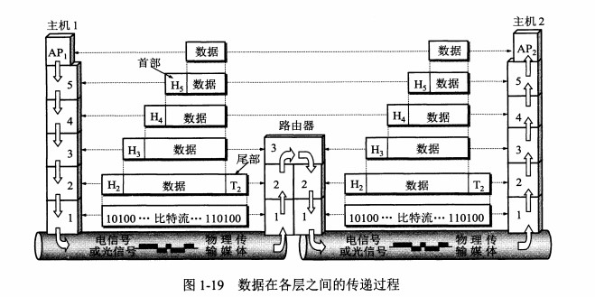

# 计算机网络基础
# 前言
本人平时学习及收集内容，欢迎参入一起讨论。
# 内容
# 一、网络层次划分

# 1.1 五层协议
- 应用层：提供用户接口，特指能够发起网络流量的程序，比如客户端程序：QQ，MSN，浏览器等；服务器程序：web 服务器，邮件服务器，流媒体服务器等等。数据单位为报文。
- 运输层：提供的是进程间的通用数据传输服务。由于应用层协议很多，定义通用的运输层协议就可以支持不断增多的应用层协议。运输层包括两种协议：
- 传输控制协议 TCP，提供面向连接、可靠的数据传输服务，数据单位为报文段；
- 用户数据报协议 UDP，提供无连接、尽最大努力的数据传输服务，数据单位为用户数据报。
- TCP 主要提供完整性服务，UDP 主要提供及时性服务。
- 网络层：为主机间提供数据传输服务，而运输层协议是为主机中的进程提供服务。网络层把运输层传递下来的报文段或者用户数据报封装成分组。（负责选择最佳路径 规划 IP 地址）
- 路由器查看数据包目标 IP 地址，根据路由表为数据包选择路径。路由表中的类目可以人工添加（静态路由）也可以动态生成（动态路由）。
- 数据链路层：不同的网络类型，发送数据的机制不同，数据链路层就是将数据包封装成能够在不同的网络传输的帧。能够进行差错检验，但不纠错，监测处错误丢掉该帧。
- 帧的开始和结束，透明传输，差错校验
- 物理层：物理层解决如何在连接各种计算机的传输媒体上传输数据比特流，而不是指具体的传输媒体。物理层的主要任务描述为：确定与传输媒体的接口的一些特性，即：
- 机械特性：例接口形状，大小，引线数目
- 电气特性：例规定电压范围 ( -5V 到 +5V )
- 功能特性：例规定 -5V 表示 0，＋ 5V 表示 1
- 过程特性：也称规程特性，规定建立连接时各个相关部件的工作步骤
# 1.2 ISO 七层模型中表示层和会话层功能是什么？
- 表示层：数据压缩、加密以及数据描述。这使得应用程序不必担心在各台主机中表示/存储的内部格式（二进制、ASCII，比如乱码）不同的问题。
- 会话层：建立会话，如 session 认证、断点续传。通信的应用程序之间建立、维护和释放面向用户的连接。通信的应用程序之间建立会话，需要传输层建立 1 个或多个连接。（...后台运行的木马，netstat -n）
- 说明：五层协议没有表示层和会话层，而是将这些功能留给应用程序开发者处理。
# 1.3 数据在各层之间的传递过程
在向下的过程中，需要添加下层协议所需要的首部或者尾部，而在向上的过程中不断拆开首部和尾部。
- 路由器只有下面三层协议，因为路由器位于网络核心中，不需要为进程或者应用程序提供服务，因此也就不需要运输层和应用层。
- 交换机只有下面两层协议

# 1.4 TCP/IP 四层模型
它只有四层，相当于五层协议中数据链路层和物理层合并为网络接口层。
现在的 TCP/IP 体系结构不严格遵循 OSI 分层概念，应用可能会直接使用 IP 层或者网络接口层。

TCP/IP 协议族是一种沙漏形状，中间小两边大，IP 协议在其中占用举足轻重的地位。

# 二、IP 地址
# 2.1 IP 首部
普通的 IP 首部长为 20 个字节，除非含有选项字段。
最高位在左边，记为 0bit；最低位在右边，记为 31bit。
4 个字节的 32bit 值以下面次序传输：首先是 0~7bit，其次 8~15bit，然后 16~23bit,最后是 23~31 bit。
# 2.2 网络地址
IP 地址由网络号（包括子网号）和主机号组成，网络地址的主机号为全 0，网络地址代表着整个网络。
# 2.3 广播地址
广播地址通常称为直接广播地址，是为了区分受限广播地址。
广播地址与网络地址的主机号正好相反，广播地址中，主机号为全 1。当向某个网络的广播地址发送消息时，该网络内的所有主机都能收到该广播消息。
# 2.4 组播地址
D 类地址就是组播地址。
先回忆下 A，B，C，D 类地址吧：
A 类地址以 0 开头，第一个字节作为网络号，地址范围为：0.0.0.0~127.255.255.255；(modified @2016.05.31)
B 类地址以 10 开头，前两个字节作为网络号，地址范围是：128.0.0.0~191.255.255.255;
C 类地址以 110 开头，前三个字节作为网络号，地址范围是：192.0.0.0~223.255.255.255。
D 类地址以 1110 开头，地址范围是 224.0.0.0~239.255.255.255，D 类地址作为组播地址（一对多的通信）；
E 类地址以 1111 开头，地址范围是 240.0.0.0~255.255.255.255，E 类地址为保留地址，供以后使用。
注：只有 A,B,C 有网络号和主机号之分，D 类地址和 E 类地址没有划分网络号和主机号。
# 2.5 255.255.255.255
该 IP 地址指的是受限的广播地址。受限广播地址与一般广播地址（直接广播地址）的区别在于，受限广播地址只能用于本地网络，路由器不会转发以受限广播地址为目的地址的分组；一般广播地址既可在本地广播，也可跨网段广播。例如：主机 192.168.1.1/30 上的直接广播数据包后，另外一个网段 192.168.1.5/30 也能收到该数据报；若发送受限广播数据报，则不能收到。
# 2.6 0.0.0.0
常用于寻找自己的 IP 地址，例如在我们的 RARP，BOOTP 和 DHCP 协议中，若某个未知 IP 地址的无盘机想要知道自己的 IP 地址，它就以 255.255.255.255 为目的地址，向本地范围（具体而言是被各个路由器屏蔽的范围内）的服务器发送 IP 请求分组。
# 2.7 回环地址
127.0.0.0/8 被用作回环地址，回环地址表示本机的地址，常用于对本机的测试，用的最多的是 127.0.0.1。
# 2.8 A、B、C 类私有地址
私有地址(private address)也叫专用地址，它们不会在全球使用，只具有本地意义。
A 类私有地址：10.0.0.0/8，范围是：10.0.0.0~10.255.255.255
B 类私有地址：172.16.0.0/12，范围是：172.16.0.0~172.31.255.255
C 类私有地址：192.168.0.0/16，范围是：192.168.0.0~192.168.255.255
# 三、子网掩码及网络划分
随着互连网应用的不断扩大，原先的 IPv4 的弊端也逐渐暴露出来，即网络号占位太多，而主机号位太少，所以其能提供的主机地址也越来越稀缺，目前除了使用 NAT 在企业内部利用保留地址自行分配以外，通常都对一个高类别的 IP 地址进行再划分，以形成多个子网，提供给不同规模的用户群使用。
这里主要是为了在网络分段情况下有效地利用 IP 地址，通过对主机号的高位部分取作为子网号，从通常的网络位界限中扩展或压缩子网掩码，用来创建某类地址的更多子网。但创建更多的子网时，在每个子网上的可用主机地址数目会比原先减少。
# 3.1 什么是子网掩码？
子网掩码是标志两个 IP 地址是否同属于一个子网的，也是 32 位二进制地址，其每一个为 1 代表该位是网络，为 0 代表主机位。它和 IP 地址一样也是使用点式十进制来表示的。如果两个 IP 地址在子网掩码的按位与的计算下所得结果相同，即表明它们共属于同一子网中。
在计算子网掩码时，我们要注意 IP 地址中的保留地址，即“0”地址和广播地址，它们是指主机地址或网络地址全为“0”或“1”时的 IP 地址，它们代表着本风格地址和广播地址，一般是不能被计算在内的。
# 3.2 子网掩码的计算
对于无须再划分成子网的 IP 地址来说，其子网掩码非常简单，即按照其定义即可写出：如某 B 类 IP 地址为 10.12.3.0，无须再分割子网，则该 IP 地址的子网掩码 255.255.0.0。如果它是一个 C 类地址，则其子网掩码为 255.255.255.0。其它类推，不再详述。
- 利用子网数来计算
- 利用主机数来计算
- 还有一种题型，要你根据每个网络的主机数量进行子网地址的规划和计算子网掩码。这也可按上述原则进行计算。
# 四、ARP/RARP 协议
地址解析协议，即 ARP（Address Resolution Protocol），是根据 IP 地址获取物理地址的一个 TCP/IP 协议。主机发送信息时将包含目标 IP 地址的 ARP 请求广播到网络上的所有主机，并接收返回消息，以此确定目标的物理地址；收到返回消息后将该 IP 地址和物理地址存入本机 ARP 缓存中并保留一定时间，下次请求时直接查询 ARP 缓存以节约资源。地址解析协议是建立在网络中各个主机互相信任的基础上的，网络上的主机可以自主发送 ARP 应答消息，其他主机收到应答报文时不会检测该报文的真实性就会将其记入本机 ARP 缓存；由此攻击者就可以向某一主机发送伪 ARP 应答报文，使其发送的信息无法到达预期的主机或到达错误的主机，这就构成了一个 ARP 欺骗。ARP 命令可用于查询本机 ARP 缓存中 IP 地址和 MAC 地址的对应关系、添加或删除静态对应关系等。
ARP 工作流程举例：
主机 A 的 IP 地址为 192.168.1.1，MAC 地址为 0A-11-22-33-44-01；
主机 B 的 IP 地址为 192.168.1.2，MAC 地址为 0A-11-22-33-44-02；
当主机 A 要与主机 B 通信时，地址解析协议可以将主机 B 的 IP 地址（192.168.1.2）解析成主机 B 的 MAC 地址，以下为工作流程：
- 根据主机 A 上的路由表内容，IP 确定用于访问主机 B 的转发 IP 地址是 192.168.1.2。然后 A 主机在自己的本地 ARP 缓存中检查主机 B 的匹配 MAC 地址。
- 如果主机 A 在 ARP 缓存中没有找到映射，它将询问 192.168.1.2 的硬件地址，从而将 ARP 请求帧广播到本地网络上的所有主机。源主机 A 的 IP 地址和 MAC 地址都包括在 ARP 请求中。本地网络上的每台主机都接收到 ARP 请求并且检查是否与自己的 IP 地址匹配。如果主机发现请求的 IP 地址与自己的 IP 地址不匹配，它将丢弃 ARP 请求。
- 主机 B 确定 ARP 请求中的 IP 地址与自己的 IP 地址匹配，则将主机 A 的 IP 地址和 MAC 地址映射添加到本地 ARP 缓存中。
- 主机 B 将包含其 MAC 地址的 ARP 回复消息直接发送回主机 A。
- 当主机 A 收到从主机 B 发来的 ARP 回复消息时，会用主机 B 的 IP 和 MAC 地址映射更新 ARP 缓存。本机缓存是有生存期的，生存期结束后，将再次重复上面的过程。主机 B 的 MAC 地址一旦确定，主机 A 就能向主机 B 发送 IP 通信了。
逆地址解析协议，即 RARP，功能和 ARP 协议相对，其将局域网中某个主机的物理地址转换为 IP 地址，比如局域网中有一台主机只知道物理地址而不知道 IP 地址，那么可以通过 RARP 协议发出征求自身 IP 地址的广播请求，然后由 RARP 服务器负责回答。
RARP 协议工作流程：
- 给主机发送一个本地的 RARP 广播，在此广播包中，声明自己的 MAC 地址并且请求任何收到此请求的 RARP 服务器分配一个 IP 地址；
- 本地网段上的 RARP 服务器收到此请求后，检查其 RARP 列表，查找该 MAC 地址对应的 IP 地址；
- 如果存在，RARP 服务器就给源主机发送一个响应数据包并将此 IP 地址提供给对方主机使用；
- 如果不存在，RARP 服务器对此不做任何的响应；
- 源主机收到从 RARP 服务器的响应信息，就利用得到的 IP 地址进行通讯；如果一直没有收到 RARP 服务器的响应信息，表示初始化失败。
# 五、TCP/UDP 协议
# 六、其它协议
# 6.1 路由选择协议
常见的路由协议有：RIP 协议、OSPF 协议。
- RIP 协议：底层是贝尔曼福特算法，它选择路由的度量标准（metric)是跳数，最大跳数是 15 跳，如果大于 15 跳，它就会丢弃数据包。
- OSPF 协议：Open Shortest Path First 开放式最短路径优先，底层是迪杰斯特拉算法，是链路状态路由选择协议，它选择路由的度量标准是带宽，延迟。
# 6.2 DNS 协议
DNS 是域名系统的缩写，该系统用于命名组织到域层次结构中的计算机和网络服务，可以简单地理解为将 URL 转换为 IP 地址。域名是由圆点分开的一串单词或缩写组成的，每一个域名都对应一个唯一的 IP 地址，在 Internet 上域名与 IP 地址之间是一一对应的，DNS 就是进行域名解析的服务器。DNS 命名用于 Internet 等 TCP/IP 网络中，通过用户友好的名称查找计算机和服务。
# 6.3 NAT 协议
NAT 网络地址转换(Network Address Translation)属接入广域网(WAN)技术，是一种将私有（保留）地址转化为合法 IP 地址的转换技术，它被广泛应用于各种类型 Internet 接入方式和各种类型的网络中。原因很简单，NAT 不仅完美地解决了 lP 地址不足的问题，而且还能够有效地避免来自网络外部的攻击，隐藏并保护网络内部的计算机。
# 6.4 DHCP 协议
DHCP 动态主机设置协议（Dynamic Host Configuration Protocol）是一个局域网的网络协议，使用 UDP 协议工作，主要有两个用途：给内部网络或网络服务供应商自动分配 IP 地址，给用户或者内部网络管理员作为对所有计算机作中央管理的手段。
# 6.5 HTTP 协议
参考这里HTTP 详情
# 参考资料
- 计算机网络——字节跳动
- 计算机网络
- 前端面试基础网络问题
- 常见面试题整理--计算机网络篇
- 面试专场之「计算机网络」知识
- 计算机网络基础知识总结
- 一站到底 ---前端基础之网络
- 网络基础必知
- 常见面试题整理--计算机网络篇（每位开发者必备）
- 计算机网络太难？了解这一篇就够了
- 全面分析前端的网络请求
- 进阶必备的网络基础
- 前端需要了解的计算机网络知识， 这一篇就够了！(图文并茂，万字长文，点赞收藏哦！)
# 联系作者
平凡世界，贵在坚持。